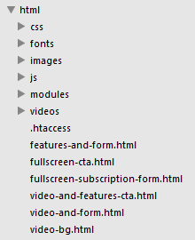
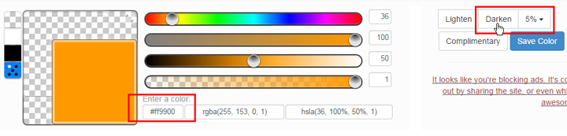
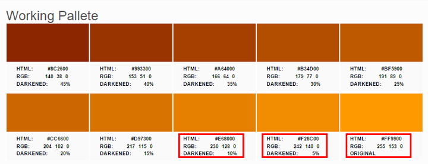
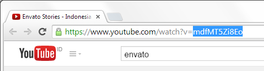
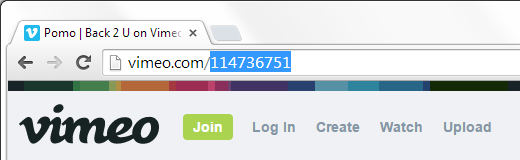

Getting Started
How to Install & Setup
After you download and extracted the package, go to /html directory, you will see some html files there. Choose any layout you want, and customize as you see fit (read more about how to customize the page in the next sections in this documentation). After you are done, upload the html files and the folders (css, js, images, modules, fonts) into your hosting public_html. Don't forget to rename the html filename as index.html to make it the default document to load.
Files Structures
All files are very well organized, makes it easy for you to find any file you want to edit. The HTML file is very clean and easy to read, also completed with some notes for you.

Styles
Changing Logo
The easiest way to change all logos in the page is by going to /images/logos from your root site directory. There are 2 types of logos: header logo and footer logo. The recommended size for them:
- Header logo — max-height: 40px, with free width
- Footer logo — free width & height, but don't put image more than 400px width or 300px height
Changing Typography
By default, drew uses Open Sans for body typography, and Montserrat for heading & secondary typography. If you want to change this default settings, look at the <head> part of your html file. There is a section with comment: <!-- GOOGLE FONTS -->. Change the URL into other Google fonts you want. After that, please replace all font-family value on the /css/style.css file.
If you change the typography, you might need to do a lot of works to change some CSS values which affect the design aspects, like line-height, font-size, margin, padding, etc.
Changing Color Scheme (Pre-defined Color Schemes)
Look at the <head> part of your html file. There is a section with comment: <!-- COLORS -->. There you can see some color scheme stylesheets. Un-comment the one you choose and then remove or comment the rests.
Create Your Own (Custom) Color Set
If you don't feel comfortable with the pre-defined color schemes, you can create your own in only 2 minutes.
- Set a basic accent color for your branding. Usually pick the most used color in your logo, for example: say it's
#ff9900 - Go to Hex Color Tool, input your accent color into the textbox, and then choose 5% and click Darken
 - Notice that a set of color palette appear on the bottom of the form, like this:
 - Please make notes of the values (hex and rgb format, as rectangled in the picture) for original, darken 5%, and darken 10% colors.
- Clone
/colors/orange.cssand rename it into other name, for example:custom.css - Replace the original color: Find all instance of
#f3ae73and replace it with your#ff9900— Find all instance of243,174,115and replace it with your255,153,0 - Replace the darken 5% color (same method like the original color replacement)
- Replace the darken 10% color (same method like the original color replacement)
Section
Change Section Color Sets
Each section is assigned to a color set. You can easily switch from one color to another color set by just adding the trigger class into the <section>'s classes. Drew has 4 section color sets:
- White (default color set) — White background with dark text
- Gray (triggered via
section-grayclass) — Subtle gray background with dark text - Dark (triggered via
section-darkclass) — Inversed version, dark gray background with white text - Accent (triggered via
section-accentclass) — Use accent color for the background and white for the text
Configure Section Background Image Settings
If you want to add a background image to your section, please do the following steps
- Add this code to your section, just before the
<div class="container">:<div class="section-background"> <!-- IMAGE BACKGROUND --> <div class="section-background-image"></div> </div>
- Go to your CSS file (
style.css), and set your background image (example below is setting used for numbers section): - You can change all the CSS value as you see fit. The opacity value is very important to keep your background image blended in transparency with the section's background color
.numbers-section .section-background-image {
background-image: url(../images/backgrounds/numbers-bg.jpg);
background-repeat: no-repeat;
background-size: cover;
opacity: 0.2;
}
I don't recommend the use of background-image CSS property directly on the section's element style. Please use a additional section-background-image element as shown above instead.
Enable Parallax Background Effect for Section Background Image
Optionally you can enable the parallax background effect for the specified section's background image. Here's how to enable it:
- Add a new class:
parallax-backgroundto the section's classes AND also new attribute:data-stellar-background-ratio="0.4" - You will see something like this:
<div class="section-background"> <!-- IMAGE BACKGROUND --> <div class="section-background-image parallax-background" data-stellar-background-ratio="0.4"></div> </div>
Drew uses Stellar JS for handling the parallax functionality. So make sure the script is included on the page. For advanced customization, please read Stellar JS documentation page.
Hero Section
Enable Video Background
The Video Background can be enabled from the section-background element of the hero section. Look at the code:
<!-- HERO ================================= --> <section id="hero" class="hero-section hero-layout-simple hero-fullscreen section section-dark"> <div class="section-background"> <!-- IMAGE BACKGROUND --> <div class="section-background-image parallax-background" data-stellar-background-ratio="0.4"></div> <!-- VIDEO BACKGROUND --> <!-- <div class="section-background-video section-background-dot-overlay parallax" data-stellar-ratio="0.4"> <video preload="auto" autoplay loop muted poster=""> <source type="video/mp4" src="videos/video-bg.mp4"> <source type="video/ogg" src="videos/video-bg.ogv"> <source type="video/webm" src="videos/video-bg.webm"> </video> </div> --> </div>
See the video background mode is commented out. You need to switch (un-comment) the video background part and in exchange, you comment out (or remove) the image background part. So it will be like this:
<!-- HERO ================================= --> <section id="hero" class="hero-section hero-layout-simple hero-fullscreen section section-dark"> <div class="section-background"> <!-- VIDEO BACKGROUND --> <div class="section-background-video section-background-dot-overlay"> <video preload="auto" autoplay loop muted poster=""> <source type="video/mp4" src="videos/video-bg.mp4"> <source type="video/ogg" src="videos/video-bg.ogv"> <source type="video/webm" src="videos/video-bg.webm"> </video> </div> </div>
Don't forget to put your video files in 3 formats, mp4, ogv / ogg, webm. You may want to add the poster attribute with the URL to a fallback image, in case some browsers can't play your video.
Enable Parallax Effect on Video Background
Optionally, you can turn on the parallax effect on the video, by adding: parallax class and data-stellar-ratio="0.4" to the element, like shown below:
<!-- HERO ================================= --> <section id="hero" class="hero-section hero-layout-simple hero-fullscreen section section-dark"> <div class="section-background"> <!-- VIDEO BACKGROUND --> <div class="section-background-video section-background-dot-overlay parallax" data-stellar-ratio="0.4"> <video preload="auto" autoplay loop muted poster=""> <source type="video/mp4" src="videos/video-bg.mp4"> <source type="video/ogg" src="videos/video-bg.ogv"> <source type="video/webm" src="videos/video-bg.webm"> </video> </div> </div>
Enable / Disable Fullscreen Mode
If you look at the demo pages, you will find some pages are in fullscreen mode, e.g. "Fullscreen CTA" and "Fullscreen Subscription Form". If you want to disable the hero fullscreen mode, you just need to remove hero-fullscreen class in the hero section element.
Embed A Video
Embed a Youtube Video
- Paste this code to where you want to embed the video:
<iframe class="video-async" data-source="youtube" data-video="7UAy8E3e9f8" allowfullscreen></iframe>
- Go to Youtube, and find the video you want to embed into the page. From the address bar, copy the Youtube video id (like the one marked in the picture below)
 - Back to the html editor, replace
7UAy8E3e9f8with the copied video id from Youtube. - The
video-asyncclass is very important to make your page load performance faster. So don't remove that class.
Embed a Vimeo Video
- Paste this code to where you want to embed the video:
<iframe class="video-async" data-source="vimeo" data-video="115134273" data-color="f3ae73" allowfullscreen></iframe>
- Go to Vimeo, and find the video you want to embed into the page. From the address bar, copy the Vimeo video id (like the one marked in the picture below)
 - Back to the html editor, replace
115134273with the copied video id from Vimeo. - Vimeo allows you to custom the accent color of the video player control. Fill the
data-colorattribute with the color you want in hex format. e.g.data-color="ff9900". - The
video-asyncclass is very important to make your page load performance faster. So don't remove that class.
Forms
Subscription Form (via Mailchimp)
Drew is integrated with Mailchimp for handling the subscription form feature. Before you setup the subscription form, make sure you already created a subscription list in your Mailchimp account. After that, to customize the backend of the subscription form, go to /modules/subscribe-mailchimp.php, there is a block of codes at the top of the file, where you should configure the settings.
// ============================================= // CONFIGURATIONS // ============================================= // Authentication $api_key = '1f61172f386ec0241ed925d8eef3790c-us8'; // Find on your Account Settings > Extras > API Keys $list_id = '01fb034669'; // Find on your List > Settings // Validation messages $error_messages = array( 'List_AlreadySubscribed' => 'The email you entered is already subscribed.', 'Email_NotExists' => 'The email you entered is invalid.', 'else' => 'An error occurred.', ); $success_message = 'Success!';
Enable / Disable AJAX Submission on Forms
Optionally, you can enable AJAX submission for your forms (both normal form and subscription form). The AJAX function is triggered by a single class: form-ajax-submit, add this class to the form element. By default, I already handled the AJAX response for the subscription form. You only need to configure the reponse message in the module file's settings.
If you use AJAX for advanced form and want to create a custom backend for the form, there are some rules you need to comply in order to make it works with my default AJAX response handler:
- my script will automatically send an additional argument
ajax=1which maybe useful for you to check whether the form is submitted through AJAX request or not. - return dataType is always in JSON.
- the structure of the
returnobject:
return = { status : 'error', // success / error / other states as you want message : 'Email is already registered', // your message to explain the response status foe : 'bar', // You can add other response values you want to deliver within the JSON, but you must create a custom callback to handle these responses. - Add your custom callback, like this:
$( '#form' ).on( 'form-ajax-response', function( event, response ) { // you can do anything with the response JSON // #form is the form's selector }); - The response message will be displayed in an alert box. But first, make sure you already included a blank alert element in the form:
<div class="form-validation alert"></div>. If your response status iserror, thealert-dangerclass will be added to the alert element.
Preloader
Optionally, you can enable a preloader screen on the page load. To enable it, go to <body> part and add enable-preloader class. Yes, it's just as simple as that!
Animations
Add Animation to An Element
To add an animation to any element, just add data-animation to the element. The value would be the animation effect name from the Animate CSS effect list. For example, if you want to use bounceIn effect, then you should add data-animation="bounceIn" to the element.
Drew uses Animate CSS for handling the animation effects. So make sure the stylesheet is included on the page. Please look at animate.css page to learn more about all the effects.
Enable / Disable Animations in The Page
You can disable all animations in the page with a single trigger class. Just add / remove enable-animations class in the body element, no need to remove all data-animation attribute from all the elements.
Icons Integration
Drew uses Font Awesome for the default icon font. So make sure the stylesheet is included on the page. By default, some elements on the page are already integrated with some icons. You can change the icon by changing the class name defined on the element. For further guidelines and also the full list of available icon class names, please check out Font Awesome site.
Retina Display
Drew has put some examples on how to handle retina images to the page, please look at the header logo part or the footer logo part.
<!-- HEADER LOGO --> <a class="navbar-logo navbar-brand anchor-link" href="#hero"> <img src="images/logos/header-logo.png" srcset="images/logos/header-logo@2x.png 2x" alt="Drew"> </a>
The srcset attribute contains the URL of the retina image for the logo. And the "2x" string after the URL means that the image will only be rendered on devices with 2x pixel density than the normal screen. You can apply this same method to other <img> elements on the page. For detailed explaination about this feature, please learn the basic knowledge of srcset and sizes attribute first. Eric Portis have written a very nice article about this, Srcset and sizes.
Drew uses Picturefill for handling the retina display feature. So make sure the script is included on the page. Please look at Picturefill page to learn more advanced technique.
Optimize Page Performance
W3 Validator
After you uploaded the files into your hosting, the first step you should do is checking if your page is in valid HTML code. To do so, go to W3 Validator and input your page URL. The generated report will tell you if there is any error or invalid code on your page. By default, Drew passed the test with 0 (zero) error, but you need to do re-check in case you have edited the codes which causes errors.
Turn Off Non Essential Features
Some features are really optional and you may decide to disable them in favor of better page load performance. Disable them will affect the design aspect but give you better performance since it will use less resources (the library script should be removed from the page).
- Preloader Screen — please read the Preloader section in this documentation to disable this feature
- Animations — please read the Animations section in this documentation to disable this feature
- Retina Display — please read the Retina Display section in this documentation to disable this feature
Performance Analytics
Go to GT Metrix and try its FREE analytics report which will tell you the grade of your page load performance from PageSpeed, YSlow, and other reports. You will find some points are marked yellow or red, means those are the issues which caused slow load on your page. Learn the detailed explanation and how to fix them. I included some tips and tricks below to overcome those issues.
Leveraging Browser Cache
I have included a .htaccess file in the root directory, it should be placed along with your index.html. The .htaccess file has the configuration for leveraging browser cache. So you only need to upload the file. Please note, that .htaccess only works for Apache PHP server, if you use other PHP server, please do research how to leverage browser cache.
Combine JS & CSS Files
By default, Drew uses all separated resources files (look at your index.html where I included all CSS and JS files separately). You might want to combine and merge these JS and CSS files into only one JS file and one CSS file. This will reduce the number of page requests, which will also enhance your page laod performance.
Use CDN
Some JS and CSS files are available on some CDN provider. One I like the best is CDN JS. I would recommend you to use CDN for Bootstrap, Font Awesome, and jQuery scripts. Replace the original include URL on the page with the CDN URL.
Image Width & Height
After you finished edited the content, you should define the width and height for each image. For example, my default header logo use 83px width and 30px height, then you should put these attributes on the header logo img element: width="83" height="30".
Scale & Optimize All Images
Don't use large image if you need small one. This will reduce the page resources size and will boost your page load performance. If you need 300px image width as most, make sure you save your image to be 300px, not larger than that. And I also recommend that you go to Tiny JPG and Tiny PNG, which are a FREE online service to seamlessly optimize your image with same quality but smaller bytes on the image size.
Support
If you need any help, feel free to contact me via ThemeForest, Email, Twitter, or Facebook. I will help you solve your problem :)
- Email: david.rozando+design@gmail.com
- Twitter: daviedR
- Facebook: david.rozando
Credits
This beautiful template is brought to you with helps of many awesome resources, so I would say thanks to:
- Font Icons: Font Awesome
- Images: Death to Stock Photo
- Videos: Orange HD
- Animations: Animate CSS
- Parallax: Stellar JS
- Inspiration Blog: WIG (Web Design Inspiration)